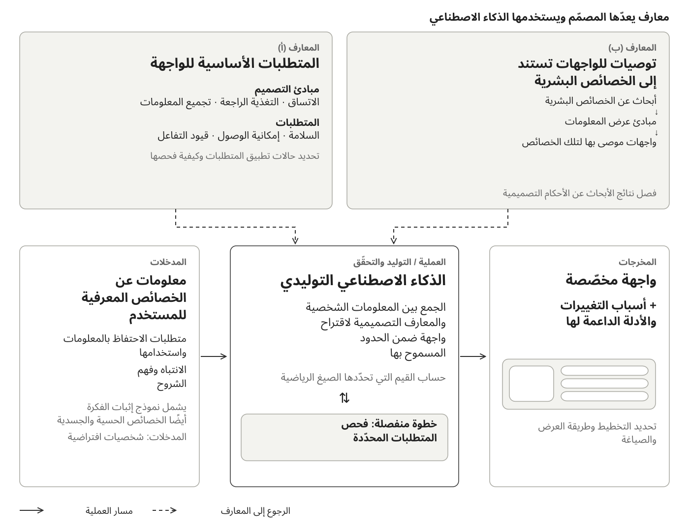
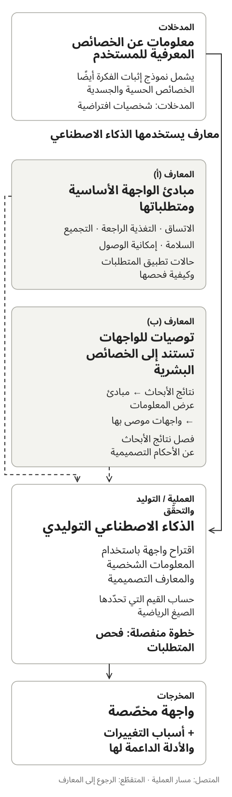
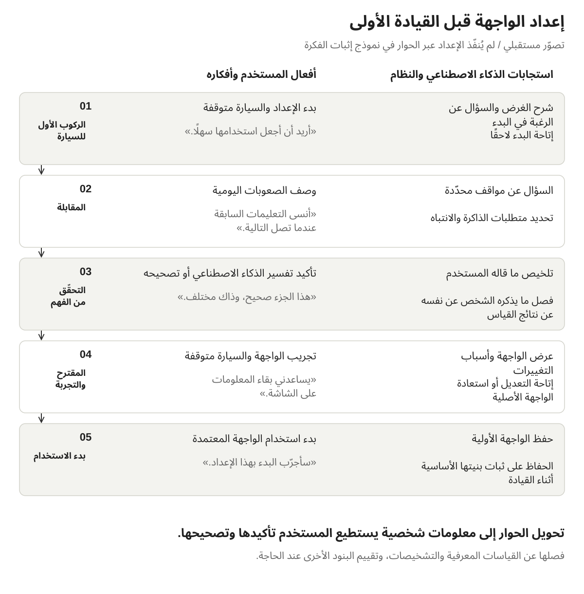

تخصيص واجهات المستخدم بالتصميم القائم على القيود
أغسطس 2026
نظرة عامة
يقترح هذا المشروع نظامًا يستقبل معلومات عن الخصائص المعرفية المرتبطة باستخدام الواجهة، ثم يولّد واجهة تلائم الشخص. ويجمع بين مبادئ تصميم الواجهات ومتطلبات السلامة وإمكانية الوصول والأبحاث المتعلقة بالخصائص البشرية.
استخدمت نهجًا أسمّيه «التصميم القائم على القيود»: يحدّد البشر المتطلبات والحالات التي تنطبق فيها، ويضع الذكاء الاصطناعي التوليدي مقترحات ملموسة ضمن هذه الحدود. واتخذت الملاحة بالسيارة حالةً للدراسة، فبنيت نموذجًا لإثبات الفكرة يولّد واجهات لـ13 شخصية افتراضية تشمل خصائصها الجوانب الحسية والجسدية، ثم يفحص استيفاء المخرجات للمتطلبات في خطوة منفصلة.
أظهرت المقارنة حالة واحدة تغيّر فيها تخطيط الشاشة بوضوح استجابةً لخاصية جسدية، بينما كان التغيّر البصري محدودًا في معظم المخرجات. ولم تُختبر قابلية الاستخدام أو السلامة مع مستخدمين. وساعد العمل على تحديد القرارات التي يمكن تركها للذكاء الاصطناعي التوليدي والمتطلبات التي تضيّق مجال التخصيص.
الخلفية: كم من الاحتياجات المختلفة تستطيع واجهة واحدة تلبيته؟
توفّر معظم المنتجات واجهة مشتركة مصمّمة لأكبر عدد ممكن من الناس. لكن الناس يختلفون في مقدار المعلومات التي يستطيعون معالجتها في آن واحد، وسهولة توجيه انتباههم، وفهمهم للصياغة، ودقّة تعاملهم مع عناصر التحكّم الصغيرة. لذلك قد تظلّ واجهة تراعي احتياجات كثيرين غير ملائمة لشخص بعينه.
وللتقييم على مستوى المجموعة حدود أيضًا. فمثلًا، تشترط الإرشادات الطوعية التي نشرتها الإدارة الوطنية الأمريكية لسلامة المرور على الطرق السريعة (NHTSA) عام 2013 أن يستوفي 21 مشاركًا على الأقل من أصل 24 كلّ معيار من معايير قبول سلوك النظر. ولا يعني ذلك أن الجميع يستطيعون استخدام الواجهة بالكفاءة نفسها. [1]
حتى عندما يتيح المنتج تغيير حجم النص أو مقدار المعلومات المعروضة، يجب على المستخدم أولًا اكتشاف الإعدادات، وفهم علاقتها بالصعوبات التي يواجهها، ثم اختيار التعديل المناسب. بدأت بالتساؤل عمّا إذا كانت هذه الخيارات لا تُستخدم بما يكفي، فيبقى الناس أمام واجهات لا تلائمهم.
في الملاحة بالسيارة، يتنافس النظر إلى الشاشة والتعامل معها مع الانتباه الذي تتطلّبه القيادة. [1] وإذا كانت الواجهة غير الملائمة تزيد هذا العبء، فمن المفيد استكشاف ما إذا كانت واجهة مخصّصة منذ البداية قد تدعم قابلية الاستخدام والسلامة معًا.
أتاح الذكاء الاصطناعي التوليدي بناء نموذج أولي لعملية تحوّل المعلومات الشخصية والمعارف التصميمية إلى واجهة. واستكشفت إمكان تقليل العمل اللازم لتصميم واجهة منفصلة يدويًا لكل شخص.
لم يفحص هذا المشروع مدى تكرار استخدام هذه الإعدادات، ولا أثر الواجهة غير الملائمة في خطر وقوع الحوادث.
المقترح: الجمع بين المعلومات الشخصية ونوعين من المعارف التصميمية
يستقبل النظام معلومات عن الخصائص المعرفية المرتبطة باستخدام الواجهة. واستخدم نموذج إثبات الفكرة شخصيات افتراضية تشمل أيضًا خصائص حسية وجسدية. وينظر الذكاء الاصطناعي في هذه المعلومات إلى جانب مجموعتين من المعارف المعدّة مسبقًا: القواعد الأساسية لتصميم الواجهات، والمعارف التي تربط الخصائص البشرية بتصاميم الواجهات الموصى بها.
يولّد الذكاء الاصطناعي واجهة ضمن الحدود المسموح بها، ثم تُفحص مطابقتها للمتطلبات في خطوة منفصلة. وتشمل المخرجات الواجهة المخصّصة وشرحًا لما تغيّر وأسباب تغييره.


المدخلات: معلومات عن الشخص
تشمل المدخلات سهولة الاحتفاظ بالمعلومات واستخدامها، ومدى سهولة تشتّت الانتباه بمثيرات أخرى، وأنواع الشروح التي يجدها الشخص أوضح. ويشمل التنفيذ أيضًا الإبصار والمهارة اليدوية. وهو يستخدم معلومات مرتبطة بالتفاعل مع الواجهة، بدلًا من تحديد شكل الشاشة بناءً على التشخيص وحده.
المعارف (أ): المتطلبات الأساسية للواجهة
تغطّي هذه المجموعة المبادئ الأساسية لتصميم الواجهات: الاتساق، والتغذية الراجعة عن الأفعال، وتجميع المعلومات، ووضوح النصوص وعناصر التحكّم. وتحدّد أيضًا القيود على التفاعل داخل السيارة ومتطلبات إمكانية الوصول، والحالات التي تنطبق فيها.
المعارف (ب): ربط الخصائص البشرية بالواجهات الموصى بها
تربط هذه المجموعة الأبحاث المتعلقة بالخصائص البشرية بمبادئ عرض المعلومات، ثم بتصميم الواجهة. فصعوبة الاحتفاظ بالمعلومات في الذهن أثناء إنجاز مهمة، مثلًا، تشير إلى الحاجة إلى تقليل متطلّبات الذاكرة، وقد يقود ذلك إلى إبقاء المعلومات اللازمة ظاهرة على الشاشة.
لا تقدّم نتائج الأبحاث بالضرورة قيمًا تصميمية محدّدة لواجهة الملاحة بالسيارة. وأميّز بين ما تثبته الأبحاث وبين الأحكام التصميمية التي أستخلصها منها. وتُدرج التحسينات التي تفيد الجميع ضمن القواعد الأساسية، بدلًا من احتسابها من نتائج التخصيص.
التجربة المقترحة: إيجاد واجهة مناسبة قبل القيادة الأولى
تصوّر مستقبلي: لم يُنفّذ الإعداد عبر الحوار في نموذج إثبات الفكرة هذا.
تخيّل جلوسك في مقعد السائق في سيارة جديدة للمرة الأولى. والسيارة متوقفة، يسألك وكيل ذكاء اصطناعي عن تجاربك المعتادة. فتصف ما يصعب عليك وما يناسبك، بدلًا من التنقّل بين إعدادات تقنية.

-
قبل القيادة الأولى: بدء الحوار
الذكاء الاصطناعي: «لأجعل الشاشة مناسبة لك، هل تخبرني قليلًا عن طريقتك المعتادة في استخدام الواجهات؟ يمكننا تأجيل ذلك إذا كنت تفضّل.»
يفهم المستخدم الغرض ويختار البدء الآن أو لاحقًا.
-
المقابلة: وصف الصعوبات
الذكاء الاصطناعي: «عندما تتتابع تعليمات الملاحة، ما الذي يصعب عليك متابعته؟»
المستخدم: «عندما تصل التعليمة التالية، أنسى أحيانًا ما جاء في السابقة.»
يسأل الذكاء الاصطناعي عن مواقف محدّدة ويحدّد الصعوبات المرتبطة بالذاكرة والانتباه.
-
التحقّق من الفهم: إتاحة تصحيح تفسير الذكاء الاصطناعي
الذكاء الاصطناعي: «يبدو أن إبقاء المعلومات على الشاشة سيكون أسهل لك من تذكّر الخطوات. هل فهمت ذلك على نحو صحيح؟»
يؤكّد المستخدم تفسير الذكاء الاصطناعي أو يصحّحه. وتُحفظ المعلومات التي يذكرها الشخص عن نفسه في الحوار منفصلةً عن القياسات المعرفية والتشخيصات. وأي معلومات تحتاج إلى قياس تُقيّم على حدة.
-
المقترح والتجربة: شرح التغييرات وتجريب الواجهة
الذكاء الاصطناعي: «لتقليل ما تحتاج إلى تذكّره، أقترح شاشة تعرض الإجراء الحالي والخطوة التالية معًا.»
يجرّب المستخدم مهام مثل اختيار وجهة والسيارة متوقفة. ويمكنه القول: «النسخة السابقة كانت أوضح» أو «أودّ تغيير هذه الصياغة». ويمكن عندئذ تعديل المقترح أو استعادة الواجهة الأصلية.
-
بدء استخدام الواجهة المعتمدة
تُحفظ الواجهة التي وافق عليها المستخدم بوصفها الإعداد الأولي. وتبقى بنيتها الأساسية ثابتة أثناء حركة السيارة، ليتمكّن المستخدم من الاعتماد على ما تعلّمه. ويمكنه العودة إليها وتعديلها والسيارة متوقفة.
يهدف الحوار إلى الوصول إلى إعداد أولي مناسب، عبر تبادل يشرح فيه المستخدم احتياجاته ويصحّح سوء الفهم. وليس الغرض تصنيف المستخدم مرة واحدة.
التنفيذ: فصل المتطلبات الثابتة عن القرارات المتروكة للذكاء الاصطناعي
نفّذت مسار العمل من استقبال معلومات خصائص الشخص إلى توليد الواجهات والتحقّق منها وعرضها ومقارنتها. واستخدمت 13 شخصية افتراضية مختلفة الخصائص بوصفها مدخلات، بدلًا من المقابلة الحوارية.
اخترت الملاحة بالسيارة لأنها توفّر متطلبات ملموسة للعمل عليها: مساحة الشاشة، وحجم أهداف اللمس، ومقدار المعلومات المعروضة، والتفاعلات المسموح بها أثناء القيادة.
نهج التصميم القائم على القيود
يعني التصميم القائم على القيود في هذا المشروع أن البشر يحدّدون المتطلبات والحالات التي تنطبق فيها، ويقترح الذكاء الاصطناعي حلولًا ضمن هذه الحدود.
يحدّد النهج القائم على القواعد والمعلمات مسبقًا القيمة أو الخيار الذي يقابل كل مُدخل. أما هنا، فقد حدّدت النطاقات المسموح بها والأدلة الداعمة لكل قرار، وتركت للذكاء الاصطناعي التوليدي اختيار القيم والصياغات التي لم تُحسم مسبقًا. ويجمع التنفيذ بين القيم المحسوبة والقرارات التي يولّدها الذكاء الاصطناعي.
| ما تثبته الأدلة | كيفية التنفيذ |
|---|---|
| وجود قيمة محدّدة أو علاقة رياضية ثابتة بالأدلة | حساب القيمة ضمن الشروط ونطاق التطبيق اللذين جرى التحقّق منهما |
| معرفة اتجاه التعديل دون مقداره | اختيار قيمة تتوافق مع ذلك الاتجاه والقيود، وتسجيلها بوصفها حكمًا تصميميًا لم يُختبر |
| عدم كفاية الأدلة لتحديد خيار مناسب | التعامل مع النتيجة بوصفها مقترحًا استكشافيًا يحتاج إلى تقييم |
عند تحويل نتائج الأبحاث إلى قرارات تخصّ الواجهة، سجّلت المصادر وشروط التطبيق والأحكام التصميمية. وترافق الواجهة المولّدة أسباب التغييرات، مما يتيح تتبّع سبب اقتراح تصميم بعينه لشخص بعينه.
التحقّق من الواجهة المولّدة في خطوة منفصلة
تُولَّد الواجهة على هيئة بيانات منظّمة تصف عناصر الشاشة وتخطيطها، ثم تُعرض انطلاقًا من هذه البيانات. وتفحص الشيفرة المتطلبات العددية والبنيوية، بينما يقيّم فحص منفصل باستخدام نموذج لغوي كبير (LLM) بعض المتطلبات التي تحتاج إلى تفسير المعنى. ويسجّل النظام أيضًا البنود الخارجة عن نطاق الفحوص الآلية، والبنود التي يتعذّر التحقّق منها بسبب نقص المعلومات.
تحدّد هذه الفحوص ما إذا كانت المخرجات تستوفي المتطلبات المعرّفة. لكن تحديد ما إذا كانت الواجهة أسهل استخدامًا أو أكثر أمانًا يظلّ بحاجة إلى تقييم مع مستخدمين.
إذا ظهرت متطلبات متعارضة أثناء التصميم، يحدّدها الذكاء الاصطناعي ويقرّر الإنسان كيفية مراجعتها. ولا يغيّر الذكاء الاصطناعي المتطلبات من تلقاء نفسه عند كل توليد لواجهة.
مقارنة الواجهات: تغيّر واضح في التخطيط وتخطيط بقي متشابهًا إلى حدّ كبير
تعتمد المقارنة على واجهة افتراضية مشتركة وُلّدت دون إدخال خصائص شخصية. وقارنتها بواجهات وُلّدت من خصائص شخصية، مع الحفاظ على مجموعة الوظائف نفسها.
الصور أدناه مخرجات نموذج أولي، وليست صورًا لنظام ملاحة تجاري قبل إعادة تصميمه وبعدها. والشخصيات مدخلات متخيّلة استُخدمت لفحص آثار خصائص معيّنة، ولا تمثّل مستخدمين حقيقيين.
أهداف لمس أكبر
PS-12: شخصية افتراضية يصعب عليها اللمس الدقيق
تتطابق شخصية PS-12 مع الشخصية المرجعية PS-01 في العمر والخصائص المعرفية والحسية؛ وتختلف عنها في المهارة اليدوية فقط. وتُظهر الصور أهداف لمس أكبر، وانخفاض عدد العناصر في وسط الشاشة من سبعة إلى أربعة. ولا يشمل هذا العدد الأزرار الثابتة أسفل الشاشة.
الواجهة الافتراضية المشتركة


تعني أهداف اللمس الأكبر إمكان اختيار عدد أقل من العناصر في الشاشة الواحدة. ويهدف التصميم إلى الحفاظ على مجموعة الوظائف نفسها، لكن لقطة الشاشة هذه وحدها لا تثبت مدى سهولة الانتقال إلى الشاشات اللاحقة.
تخطيط بقي متشابهًا إلى حدّ كبير
PS-01: الشخصية المرجعية
يختلف حجم النص قليلًا، لكن عدد العناصر وتخطيطها وحجم أهداف اللمس تبقى متشابهة إلى حدّ كبير. وبهذه التوليفة من القواعد والمدخلات، لم يختلف التخطيط المولّد اختلافًا جوهريًا عن الواجهة الافتراضية المشتركة.


النتائج والمناقشة: ما مقدار الحرية الذي بقي للتوليد؟
القيمة المضافة للذكاء الاصطناعي التوليدي لم تُثبت بعد
في مقارنتي البصرية، كانت PS-12 المخرج الوحيد الذي اختلف فيه تخطيط الشاشة بوضوح. واختلفت المخرجات الأخرى في الصياغة والإعدادات، لكن مظهرها لم يكشف عن فارق جوهري في القيمة.
يمكن أيضًا تحقيق تغييرات PS-12 عبر إعدادات تضبط حجم العرض ومقدار المعلومات المعروضة. وقد تكون هناك قيمة في البدء بواجهة مناسبة دون الاضطرار إلى البحث عن تلك الإعدادات بنفسك. وينبغي تقييم هذه التجربة على نحو منفصل عن سؤال الحاجة إلى الذكاء الاصطناعي التوليدي لإنتاج الواجهة.
لم يُظهر نموذج إثبات الفكرة هذا أن تخصيص الواجهة وفق الخصائص المعرفية يحسّن أداء المهام، أو أن الذكاء الاصطناعي التوليدي ينتج واجهة أفضل من نهج قائم على القواعد.
كان نطاق التصاميم المتاح في التنفيذ ضيّقًا
بعد تطبيق الحدود الدنيا لأحجام النصوص وأهداف اللمس، ومساحة الشاشة، والحدود المفروضة على المعلومات المعروضة، بقيت خيارات قليلة لتخطيط الواجهة. كما حُدّدت أجزاء كثيرة من التنفيذ بحسابات أو بُنى ثابتة، فلم يتبقّ للذكاء الاصطناعي مجال واسع للاختيار بين بدائل تستوفي المتطلبات.
بقيت مرونة في الصياغة، لكن هذه الفروق أقلّ ظهورًا من تغييرات التخطيط، ولم يستطع التقييم البصري التقاط قيمتها كاملة. وخلصت إلى أن تقييم الذكاء الاصطناعي التوليدي يتطلّب مجموعة من المقترحات المستوفية للمتطلبات، تكون للفروق بينها أهمية في تجربة المستخدم.
تنطبق هذه النتيجة على القواعد التي جمعتها، ومعلمات الواجهة التي اخترتها، ونطاق التصاميم الذي يدعمه هذا التنفيذ. ولا تثبت حدًّا عامًا للملاحة بالسيارة أو للواجهات المخصّصة.
لم أراجع مباشرةً النص الكامل لكل معيار ذي صلة من معايير JIS أو ISO أو غيرها. وجمعت المعارف التصميمية من الأبحاث المتاحة والإرشادات الرسمية والبيانات العامة، ومن النص الكامل أو المعاينات لبعض المعايير. وقد يكون نطاق هذه المصادر أثّر في الخيارات التصميمية المتاحة. وتلزم مراجعة إضافية لمعرفة ما إذا كانت المعايير ستتيح خيارات أكثر أم ستفرض قيودًا إضافية.
العمل مع الذكاء الاصطناعي حسّن القواعد نفسها
كانت عملية تحديد متطلبات التوليد وجعلها قابلة للفحص نتيجةً أخرى للمشروع.
| المشكلة المكتشفة | المعالجة التصميمية |
|---|---|
| انطبقت عدة حدود دنيا على العنصر نفسه، دون وضوح كيفية الجمع بينها | توضيح كيفية تطبيق الحدود معًا حتى لا يُخالف أيّ منها |
| طُبّق متطلب خاص بالقيادة أيضًا حين تكون السيارة متوقفة | تحديد حالة القيادة التي ينطبق فيها كل متطلب |
| جُمعت درجة تعقيد الصياغة ووجود الأيقونات في بُعد تصميمي واحد | فصلهما إلى بُعدين مستقلّين، واستعادة خيارات استُبعدت دون ضرورة |
| استخدم الذكاء الاصطناعي متطلبات لا تنطبق على المخرج الجاري توليده | تحديد المتطلبات التي ينبغي الرجوع إليها لكل مخرج |
| ثُبّتت في التنفيذ قرارات كان يُفترض تركها للذكاء الاصطناعي | مراجعة توزيع المسؤوليات بين المواصفات والتنفيذ |
حدّد الذكاء الاصطناعي المشكلات، وقيّمتُها، ثم انعكست القرارات في التصميم. وأوضحت هذه العملية التكرارية المتطلبات التي ينبغي تطبيقها على الجميع، والجوانب التي يمكن فيها تخصيص الواجهة.
الخطوات التالية: تقييم التخصيص ودور الذكاء الاصطناعي التوليدي
الخطوة التالية هي بحث سؤالين على نحو منفصل.
أولًا: ما قيمة تجربة توفّر واجهة أولية مناسبة دون مطالبة المستخدم بضبطها؟ يتطلّب ذلك تنفيذ المقابلة الحوارية، وإتاحة تصحيح فهم الذكاء الاصطناعي، وتجريب الواجهة، ثم تقييم موثوقية المدخلات والعبء الواقع على المستخدم.
ثانيًا: في أي سياقات تصميمية يمكن للفروق بين المقترحات المولّدة بالذكاء الاصطناعي أن تحسّن التجربة؟ أريد استكشاف سياقات تترك فيها المتطلبات عدة خيارات مستوفية للشروط لتنظيم المعلومات ومسارات التفاعل.
ستقارن دراسة مع مستخدمين حقيقيين ثلاث واجهات في المهمة نفسها: الواجهة الافتراضية المشتركة، وواجهة قائمة على القواعد تُعدّل باستخدام معلومات الخصائص الشخصية، وواجهة يولّدها الذكاء الاصطناعي. وسيساعد زمن إنجاز المهمة والأخطاء وسلوك النظر وعبء العمل المقيّم ذاتيًا على التمييز بين آثار التخصيص وآثار استخدام الذكاء الاصطناعي التوليدي.
أخطّط أيضًا لمراجعة المعايير ذات الصلة بمزيد من التفصيل، وصقل التمييز بين الأدلة البحثية والأحكام التصميمية. وإلى جانب جعل المتطلبات قابلة للفحص، يتمثّل التحدّي التالي في الإبقاء ضمنها على خيارات تقدّم فروقًا ذات معنى للمستخدمين.
المراجع
- NHTSA، Visual-Manual NHTSA Driver Distraction Guidelines for In-Vehicle Electronic Devices (2013). هذه إرشادات طوعية. لمعايير قبول سلوك النظر، انظر القسم VI.E، ولمناقشة الانتباه والمخاطر، انظر القسم I.C وأقسامًا أخرى. ولا تعني الإشارة إليها أن نموذج إثبات الفكرة معتمد بوصفه مستوفيًا لهذا الاختبار. قراءة الوثيقة بالإنجليزية في السجل الفيدرالي الأمريكي